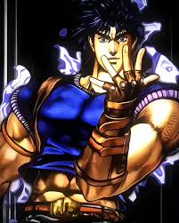
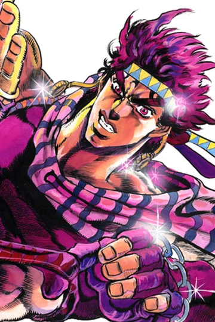

jotaro Kujo

Jotaro Kujo es el protagonista de JoJo's Bizarre Adventure: Stardust Crusaders (Parte 3) y figura clave en entregas posteriores. Es un adolescente (y luego adulto) alto, estoico y rebelde con un gran sentido de la justicia. Destaca por usar su Stand, Star Platinum, caracterizado por su inmensa fuerza física, velocidad y, eventualmente, la habilidad de detener el tiempo.
jonathan Joestar

Jonathan Joestar es el protagonista de Phantom Blood, la primera parte de JoJo's Bizarre Adventure. Es un joven noble inglés, amable y musculoso, caracterizado por su inquebrantable código de conducta de "verdadero caballero", fuerza física excepcional y su dominio del Hamon para luchar contra los vampiros y su némesis, Dio Brando
joseph Joestar

Joseph Joestar es el carismático e ingenioso protagonista de JoJo's Bizarre Adventure Part 2: Battle Tendency, apareciendo también en la parte 3 y 4. A diferencia de su abuelo Jonathan, Joseph es impetuoso, tramposo y experto en el combate Hamon, utilizando estrategias psicológicas, su ingenio y la técnica de escape "Nigerundayo"